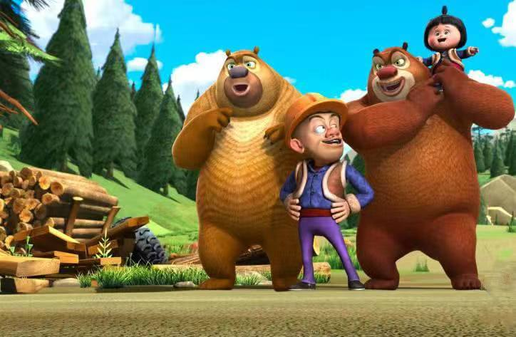

《熊出没》是深圳华强数字动漫有限公司出品的系列动画片中的第一部，丁亮、邢旭辉导演，武斌、侯喆编剧。
该片主要讲述了森林保护者熊兄弟与破坏森林、采伐原木、占领土地开发创业实验田的光头强之间上演的一幕幕搞笑对决的故事。
作品于2012年1月22日在中央电视台少儿频道首播。
2013年12月，3D动画电影《熊出没之夺宝熊兵》发布元旦特别版海报，该片已于2014年1月17日春节档上映。
该片主要讲述了森林保护者熊兄弟与破坏森林、采伐原木、占领土地开发创业实验田的光头强之间上演的一幕幕搞笑对决的故事。
作品于2012年1月22日在中央电视台少儿频道首播。
2013年12月，3D动画电影《熊出没之夺宝熊兵》发布元旦特别版海报，该片已于2014年1月17日春节档上映。